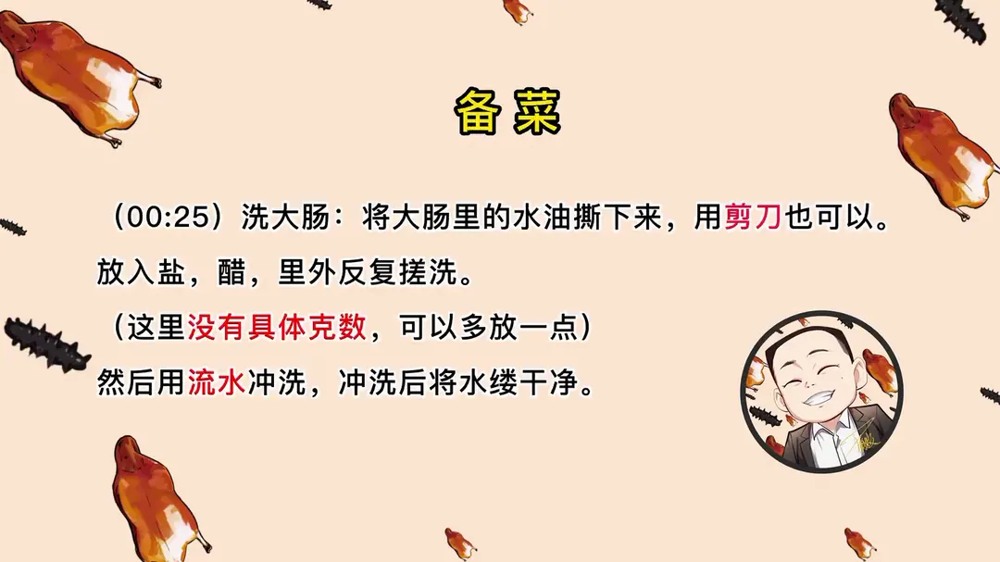
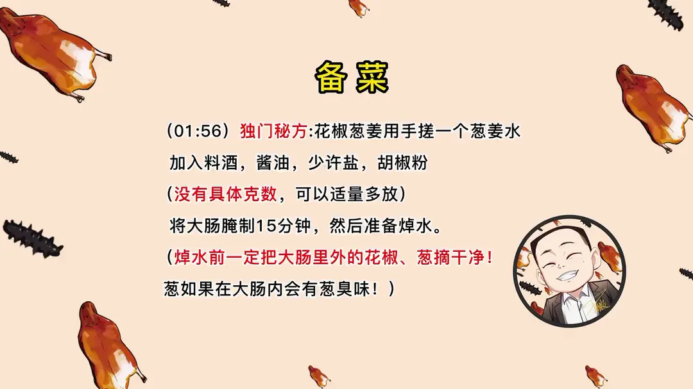
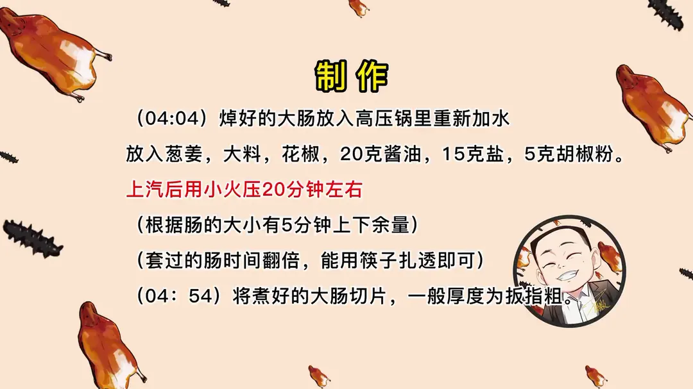
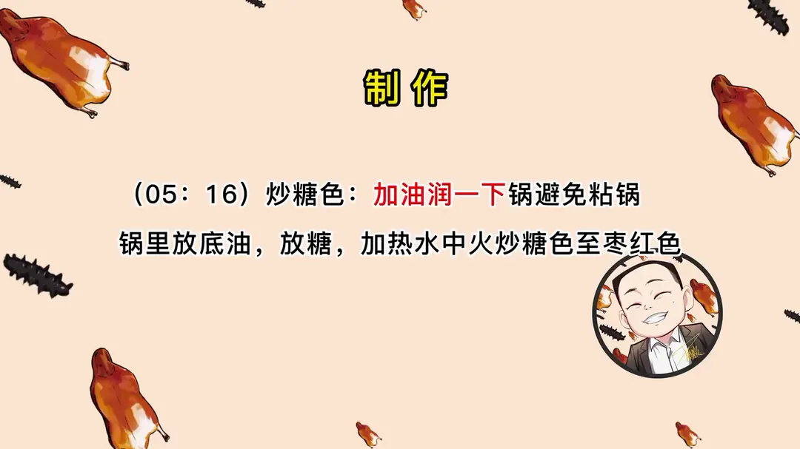
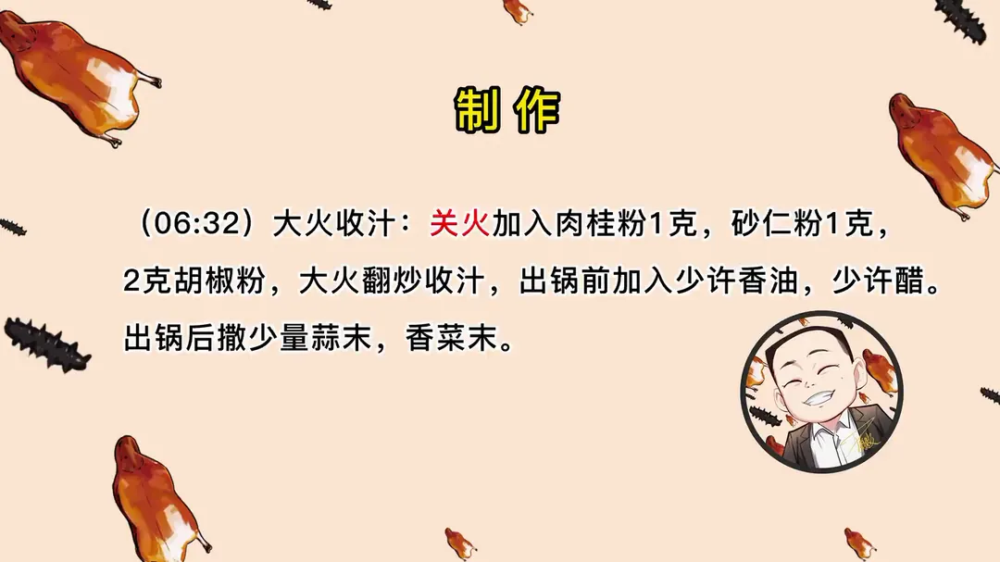

九转大肠
隋卞一做。主料大肠，肠头最好。关键在里外搓洗去油、葱姜水腌制，焯水后高压压透，再炒糖色、米醋重糖小火焖 30 分钟收汁。
原视频：https://www.bilibili.com/video/BV1iR4y187Qx
食材
大肠、葱、姜 等 34 样
| 类别 | 用料 | 用量 |
|---|---|---|
| 主料 | 大肠（肠头最好） | 适量 |
| 腌制 | 葱 | 适量 |
| 腌制 | 姜 | 适量 |
| 腌制 | 蒜 | 适量 |
| 腌制 | 花椒 | 适量 |
| 腌制 | 大料 | 适量 |
| 腌制 | 料酒 | 适量 |
| 腌制 | 酱油 | 适量 |
| 腌制 | 盐 | 少许 |
| 腌制 | 胡椒粉 | 适量 |
| 焯水 | 葱姜 | 3 片 |
| 焯水 | 料酒 | 50g |
| 压煮 | 葱姜 | 适量 |
| 压煮 | 大料 | 适量 |
| 压煮 | 花椒 | 适量 |
| 压煮 | 酱油 | 20g |
| 压煮 | 盐 | 15g |
| 压煮 | 胡椒粉 | 5g |
| 炒糖色 | 糖 | 适量 |
| 炒制 | 酱油 | 15g |
| 炒制 | 料酒 | 10g |
| 炒制 | 葱姜蒜米 | 10g |
| 炒制 | 米醋 | 150g |
| 炒制 | 糖 | 50g |
| 炒制 | 盐 | 3g |
| 炒制 | 胡椒粉 | 2g |
| 收汁 | 肉桂粉 | 1g |
| 收汁 | 砂仁粉 | 1g |
| 收汁 | 胡椒粉 | 2g |
| 收汁 | 香油 | 少许 |
| 收汁 | 醋 | 少许 |
| 收汁 | 蒜末 | 少量 |
| 收汁 | 香菜末 | 少量 |
| 其他 | 竹牙签 | 适量 |
步骤
- 洗大肠：将大肠里的水油撕下来，用剪刀也可以。放入盐、醋，里外反复搓洗（这里没有具体克数，可以多放一点），然后用流水冲洗，冲洗后将水沥干净。
- 腌制：葱、姜、花椒用手搓一个葱姜水，加入料酒、酱油、少许盐、胡椒粉（没有具体克数，可以适量多放），将大肠腌制 15 分钟。
- 焯水：起一锅水，放入 3 片葱姜、50g 料酒，冷水下锅把大肠放入焯水。套的肠会有泡鼓起来，用牙签扎一下。
- 压煮：焯好的大肠放入高压锅里重新加水，放入葱姜、大料、花椒、20g 酱油、15g 盐、5g 胡椒粉，上汽后用小火烧压 20 分钟左右（根据肠的大小有 5 分钟上下余量）。
- 切片：煮好的大肠切片，一般厚度为扳指粗。
- 炒糖色：加油润一下锅避免粘锅，锅里放底油、放糖，加热水中火炒糖色至枣红色。
- 煸炒焖制：大肠放入大火煸炒，煸炒至上色，加入 15g 酱油、10g 料酒、10g 葱姜蒜米，加热水与大肠齐平，加入 150g 米醋、50g 糖、3g 盐、2g 胡椒粉，开火后关小火焖 30 分钟。
- 收汁：关火加入肉桂粉 1g、砂仁粉 1g、2g 胡椒粉，大火翻炒收汁，出锅前加入少许香油、少许醋，出锅后撒少量蒜末、香菜末。
小贴士
- 焯水前一定把大肠里外的花椒、葱摘干净，葱留在大肠内会有葱臭味。
- 套过的肠压煮时间要翻倍，能用筷子扎透即可。
- 洗大肠没有具体克数，盐、醋可以多放一点。
讲解要点
难度：★★★★★（洗、套、压、炒糖色、收汁环环相扣，最难的是酸甜苦辣咸互不抢味）
为什么这么做
- 水油必须撕净：肠里的水油是腥臊味的主要来源，留着再好的调味也压不住。
- 盐加醋搓洗：盐提供摩擦和底味，醋中和黏液，两者一起把表面那层黏液化掉，醋本身还能去腥。
- 用葱姜花椒水加料酒、酱油腌 15 分钟：大肠厚，只靠炒的时候调味，外面有味里面没味、脏气味也去不掉；腌是「烹调前调味入底味」。
- 套肠再压：两个肠头用牙签别住翻套，煮出来才够粗、切片才像样；套过的肠要按不套的翻倍时间来压。
- 压煮后一定晾凉再切：热的时候切会塌、会散，凉了断面才齐整。
- 米醋重糖、小火焖 30 分钟：九转是酸甜咸辣苦五味合一，靠糖和醋慢慢焖进肠里，中途大火收干就只剩酸甜。
- 出锅前放肉桂粉、砂仁粉：这两味是九转的「转」，提供香气和一点苦底，早放会挥发。
- 蒜末、香菜末、醋最后下：内脏菜的蒜、胡椒粉、醋不能少，生蒜的辣和醋香只在出锅这一下才立得住。
容易翻车
- 焯水前把里外的葱、花椒摘干净，葱留在大肠内会出葱臭味。
- 套肠焯水会鼓泡，要用牙签扎一下排气，否则会撑破。
- 大肠的压煮时间不固定，20 分钟左右、有 5 分钟浮动，以筷子能扎透为准。
热评补充
- 口味做不好就容易只剩甜咸或酸甜，那就不合九转的规矩；成品应是干香打头，肥肠香和糖香一起涌上来，回口带一点生蒜的辣和微苦。
原片尾卡





原片文案
AI 字幕校准稿
现在也就是互联网发达了，这房子以前怎么也得卖个几百万。每一次网上有关于美食的热点，对厨师都是一种摧残。来吧，鲁菜名菜九转大肠。说实话，我洗大肠往前倒的话，估计得二十多年前了吧。二十多年前切墩儿的时候没洗过大肠吗？我悟性还行，切了几个月我就上灶了。
第一步是先翻肠子先洗。里边的水油要给它摘干净。本来没有那么臭——站离我八米远还说不臭。这就很干净了，白的地方多少有点油是正常的，不需要吃那种脏气味。放点盐，没有什么标准，看着放就行了，再倒点醋。这就是醋和盐一反应，把大肠表面的黏液全都化掉了，而且醋有去腥的作用，盐起一个入底味的作用。
还有用生粉洗的、面粉洗的、碱洗的，都可以，没有什么问题。洗完把里面再翻过来搓一搓。为什么叫九转大肠？就是比较麻烦，像九转仙丹一样工序复杂，所以叫九转大肠。洗到失手一捋，下面能掉一些东西了，就差不多了，然后再拿水清洗一下。大肠捋一下，把多余的水给它捋出来，捋的时候就没有黏液了，很干净，这就可以了。
下面这一步就是独门秘方了，我看全网没有一个这么做的。你们自己做特别容易外面有味、里面没有味，而且还会存留大肠那种脏气味。花椒、葱姜泡一个水，加料酒、酱油和盐、胡椒粉，我这个方法一是可以去掉脏器味，第二提前做了一个基本调味的前期工作，这叫烹调前调味，入底味、增香味。泡上十五分钟。
现在你闻闻，还要闻吗？一点味都没有，是香味、咸味。下边这一步是第二个关键，咱们要把这个大肠给它套一下。把两个肠头放在一起，拿牙签给它别一下，然后再翻一下，穿两回就行了。我们留一根不套的，煮完以后看一下区别。
起一锅水，葱姜料酒，把焯好的大肠搁里边焯一下水。咱们套的这个煮的时候会有泡鼓起来，再给它扎一下，让它泡泡气，然后一压就烂了。这个就是没有套的，其实不套直接做也够粗，但切出来就不太好看了，所以今天两种方法的效果都会告诉大家。
把焯好的大肠放到高压锅里边，放入葱姜、大料、花椒，放上一点酱油，煮完以后会有淡淡的那种红色，适当加点盐，淡淡的咸味就可以了，里边补点胡椒粉。盖上盖。大肠的生长时间难以确定，所以煮的时间有浮动，在 20 分钟上下，应该有 5 分钟的活动量；套的肠按不套肠一倍的时间来算。
时间到了，看一下这个大肠的软烂程度怎么样。用筷子能扎透了就可以了，这是没套的，这是套过的。我们切开看一眼，圈子一定得晾凉了再切。这就是套和不套的区别。
开始下锅烧制：把锅烧热，加油润一下，避免炒糖色粘锅，加底油、加糖、加水，让糖融化。大家一定要好好学一下炒糖色，因为以后经常用，看到这种枣红色就可以了。把大肠倒进去，搁锅里煸一下，煸到上色，加点酱油，加点料酒，把葱姜蒜米放进去炒香，加水，汤汁跟大肠齐平。米醋一勺，米醋 30 克，糖，少来点胡椒粉，一会儿出锅还会放。把盖盖上，关小火，大约得焖上半小时。到时候把这个胡椒粉、肉桂粉、砂仁粉倒进去，开火，出锅再来点香油，烹点醋，来点醋香味儿。
好了，装盘，撒少量蒜末，撒点香菜末。这所有的内脏类食材在烹调的时候，蒜、胡椒粉、醋都是不能少的。身为一个在山东却从来没有吃过九转大肠的人，我今天第一次尝试：这个大肠做的没有一点儿异味，异味都已经全部去掉了，只剩下大肠的香味，软烂适中，还是有口感。我感觉好好吃。
我尝一尝：首先的确是没有那个脏气味，然后一路先是干香，糖裹着肥肠的香味一块涌上来，回口有一丁丁生蒜的辣和一点点的苦味，这几个味道的配比还是非常非常关键的。你细品，酸甜咸、胡椒粉的那个辣都有，相互都不抢味，这是很难得的。我们经常做不好，就只有一个甜咸，甚至微酸或者酸甜，这就很不符合九转大肠的规矩。外面的九转大肠好像全部都是酸甜，不吹牛，要它那么好做，那真的是个个都是大师，这菜还那么难传承吗？
很好吃。